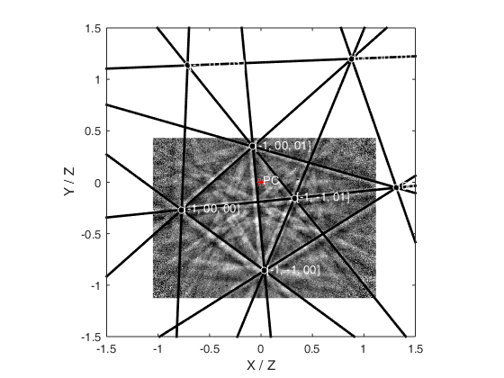
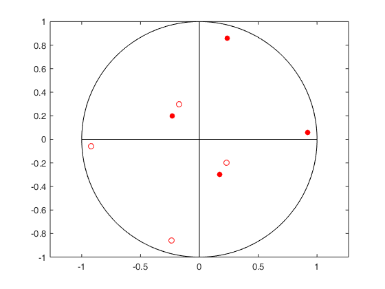
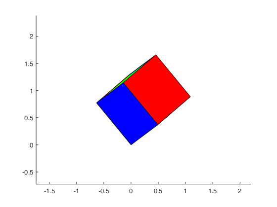

Contents
Initate Script
clear
close all
home
Sample Setup
ExpImage.Filename='Ni_Example3.bmp';
UCell.a=1;
UCell.b=1;
UCell.c=1;
UCell.alpha=90;
UCell.beta=90;
UCell.gamma=90;
UCell.phi1=127;
UCell.Phi=38;
UCell.phi2=273;
Detector.SampleTilt=70;
Detector.DetectorTilt=5;
Detector.DD=0.642;
Detector.PCX=0.483;
Detector.PCY=0.279;
disp(UCell)
disp(Detector)
a: 1
b: 1
c: 1
alpha: 90
beta: 90
gamma: 90
phi1: 127
Phi: 38
phi2: 273
SampleTilt: 70
DetectorTilt: 5
DD: 0.6420
PCX: 0.4830
PCY: 0.2790
Load Experimental Image and Set Up Detector
ExpImage.Image=flipud(imread(ExpImage.Filename));
Detector.ScreenWidth=320;
Detector.ScreenHeight=230;
HKL.max=1;
Establish detector
Detector.TotalTilt=(Detector.SampleTilt-90)-Detector.DetectorTilt;
EBSP.ScreenAspect=Detector.ScreenWidth/Detector.ScreenHeight;
EBSP.y_gn_max= Detector.PCY/Detector.DD;
EBSP.y_gn_min= -(1.0-Detector.PCY)/Detector.DD;
EBSP.x_gn_max= ((1.0-Detector.PCX)*EBSP.ScreenAspect)/Detector.DD;
EBSP.x_gn_min= -((Detector.PCX)*EBSP.ScreenAspect)/Detector.DD;
Establish the structure matrix
UCell.f=sqrt(1.0-( cosd(UCell.alpha)*cosd(UCell.alpha)...
+cosd(UCell.beta)*cosd(UCell.beta)...
+cosd(UCell.gamma)*cosd(UCell.gamma))...
+2.0*cosd(UCell.alpha)*cosd(UCell.beta)*cosd(UCell.gamma));
UCell.ax = UCell.a * UCell.f/sind(UCell.alpha);
UCell.ay = UCell.a * (cosd(UCell.gamma)-cosd(UCell.alpha)*cosd(UCell.beta))...
/sind(UCell.alpha);
UCell.az = UCell.a * cosd(UCell.beta);
UCell.by = UCell.b * sind(UCell.alpha);
UCell.bz = UCell.b * cosd(UCell.alpha);
UCell.cz = UCell.c;
UCell.StructureMat=[UCell.ax , 0, 0;
UCell.ay , UCell.by, 0;
UCell.az , UCell.bz, UCell.cz];
disp(UCell.StructureMat);
1 0 0
0 1 0
0 0 1
Establish rotation conventions
Rz=@(theta)[cosd(theta) sind(theta) 0;-sind(theta) cosd(theta) 0;0 0 1];
Rx=@(theta)[1 0 0;0 cosd(theta) sind(theta);0 -sind(theta) cosd(theta)];
Generate Cell Vectors
CVectors.h=-HKL.max:1:HKL.max;
[CVectors.p,CVectors.q,CVectors.r]=meshgrid(CVectors.h,CVectors.h,CVectors.h);
CVectors.pqr=[CVectors.p(:),CVectors.q(:),CVectors.r(:)];
CVectors.pqr=CVectors.pqr(dot(CVectors.pqr,CVectors.pqr,2)>1e-6,:);
CVectors.HKL=CVectors.pqr;
CVectors.UVW=CVectors.pqr;
disp(CVectors.HKL)
-1 -1 -1
-1 0 -1
-1 1 -1
0 -1 -1
0 0 -1
0 1 -1
1 -1 -1
1 0 -1
1 1 -1
-1 -1 0
-1 0 0
-1 1 0
0 -1 0
0 1 0
1 -1 0
1 0 0
1 1 0
-1 -1 1
-1 0 1
-1 1 1
0 -1 1
0 0 1
0 1 1
1 -1 1
1 0 1
1 1 1
Generate formal rotations & coordinate transforms as used
U.S=Rx(Detector.TotalTilt);
U.O=Rz(UCell.phi2)*Rx(UCell.Phi)*Rz(UCell.phi1);
U.At=transpose(UCell.StructureMat);
U.Astar=inv(UCell.StructureMat);
U.K = U.At*U.O*U.S;
U.Kstar = U.Astar*U.O*U.S;
disp(U.At)
disp(U.Astar)
disp(U.K)
disp(U.Kstar)
1 0 0
0 1 0
0 0 1
1 0 0
0 1 0
0 0 1
0.5970 0.2073 -0.7750
-0.6339 0.7139 -0.2974
0.4917 0.6688 0.5576
0.5970 0.2073 -0.7750
-0.6339 0.7139 -0.2974
0.4917 0.6688 0.5576
Convert UVW and HKL into the detector frame
UVW.D=CVectors.UVW*U.K;
HKL.D=CVectors.HKL*U.Kstar;
Construct the EBSP
UVW.X=transpose(UVW.D(:,1));
UVW.Y=transpose(UVW.D(:,2));
UVW.Z=transpose(UVW.D(:,3));
UVW.x_gn=UVW.X./UVW.Z;
UVW.y_gn=UVW.Y./UVW.Z;
HKL.X=transpose(HKL.D(:,1));
HKL.Y=transpose(HKL.D(:,2));
HKL.Z=transpose(HKL.D(:,3));
HKL.r=sqrt(HKL.X.^2+HKL.Y.^2+HKL.Z.^2);
HKL.kai=atan2(HKL.Y,HKL.X);
HKL.theta=acos(HKL.Z./HKL.r);
Hess.R_Hesse=10;
Hess.d_Hesse=tan(0.5*pi-HKL.theta);
Hess.alpha_Hesse=acos(Hess.d_Hesse./Hess.R_Hesse);
Hess.alpha1_hkl=HKL.kai-pi+Hess.alpha_Hesse;
Hess.alpha2_hkl=HKL.kai-pi-Hess.alpha_Hesse;
Hess.C1x=Hess.R_Hesse.*cos(Hess.alpha1_hkl);
Hess.C1y=Hess.R_Hesse.*sin(Hess.alpha1_hkl);
Hess.C2x=Hess.R_Hesse.*cos(Hess.alpha2_hkl);
Hess.C2y=Hess.R_Hesse.*sin(Hess.alpha2_hkl);
Plot the EBSP
EBSP.x_img=1:size(ExpImage.Image,2);
EBSP.y_img=1:size(ExpImage.Image,1);
EBSP.x_img=(EBSP.x_gn_max-EBSP.x_gn_min)*(EBSP.x_img-1)/max(EBSP.x_img)+EBSP.x_gn_min;
EBSP.y_img=(EBSP.y_gn_max-EBSP.y_gn_min)*(EBSP.y_img-1)/max(EBSP.y_img)+EBSP.y_gn_min;
figure;
imagesc(EBSP.x_img,EBSP.y_img,ExpImage.Image);
xlim([EBSP.x_gn_min,EBSP.x_gn_max]);
ylim([EBSP.y_gn_min,EBSP.y_gn_max]);
axis xy;
colormap('gray')
num_HKL=size(Hess.C1x,2);
for n=1:num_HKL
if HKL.Z(n)>0
hold on
plot([Hess.C1x(n) Hess.C2x(n)],[Hess.C1y(n) Hess.C2y(n)],'-k','LineWidth',2);
end
end
for n=1:num_HKL
hold on
if UVW.Z(n)>0
temp.Text1=sprintf('[%02.0f, %02.0f, %02.0f]',CVectors.HKL(n,:));
temp.ah=annotation('textbox','String',temp.Text1,'Color','w','EdgeColor','none');
set(temp.ah,'parent',gca);
set(temp.ah,'position',[UVW.x_gn(n) UVW.y_gn(n) 0.3 .1]);
scatter(UVW.x_gn(n), UVW.y_gn(n),30,'w')
end
end
scatter(0,0,50,'r*');
temp.pc=annotation('textbox','String','PC','Color','w','EdgeColor','none');
set(temp.pc,'parent',gca);
set(temp.pc,'position',[0 0 0.3 .1]);
xlabel('X / Z');
ylabel('Y / Z');
axis image
xlim([-1.5 1.5]);
ylim([-1.5 1.5]);
clear temp

Calculate in the sample coordinate system
U2.K = U.At*U.O;
U2.Kstar = U.Astar*U.O;
Stereographic Calculation
HKL_family=[1 1 1;-1 1 1;1 -1 1;1 1 -1;-1 -1 1;-1 1 -1;1 -1 -1;-1 -1 -1];
HKL_family_s=HKL_family*U2.Kstar;
HKL_family_s_unit=HKL_family_s./repmat(sqrt(dot(HKL_family_s,HKL_family_s,2)),1,3);
stereo.pole_sign=sign(HKL_family_s_unit(:,3));
stereo.pole_sign(stereo.pole_sign==0)=1;
stereo.pole_sign=repmat(stereo.pole_sign,1,2);
stereo.UVW=HKL_family_s_unit(:,1:2).*stereo.pole_sign./(repmat(HKL_family_s_unit(:,3),1,2)+stereo.pole_sign);
Plot the stereographic projection
figure;
stereo.theta=0:360;
stereo.c_x=cosd(stereo.theta);
stereo.c_y=sind(stereo.theta);
plot(stereo.c_x,stereo.c_y,'k');
hold on;
plot(stereo.c_x([1,181]),stereo.c_y([1,181]),'k');
plot(stereo.c_x([91,271]),stereo.c_y([91,271]),'k');
scatter(stereo.UVW(HKL_family_s(:,3)>0,1),stereo.UVW(HKL_family_s(:,3)>0,2),'r','filled');
scatter(stereo.UVW(HKL_family_s(:,3)<0,1),stereo.UVW(HKL_family_s(:,3)<0,2),'r');
axis equal;

Plot a unit cube in the sample frame
Cube.poi_cen=[0 0 0];
Cube.a1=[1 0 0]*U2.K;
Cube.a2=[0 1 0]*U2.K;
Cube.a3=[0 0 1]*U2.K;
Cube.face_1a=[Cube.poi_cen;
Cube.a1+Cube.poi_cen;
Cube.a1+Cube.a2+Cube.poi_cen;
Cube.a2+Cube.poi_cen;
Cube.poi_cen];
Cube.face_1b=Cube.face_1a+repmat(Cube.a3,size(Cube.face_1a,1),1);
Cube.face_2a=[Cube.poi_cen;
Cube.a1+Cube.poi_cen;
Cube.a1+Cube.a3+Cube.poi_cen;
Cube.a3+Cube.poi_cen;
Cube.poi_cen];
Cube.face_2b=Cube.face_2a+repmat(Cube.a2,size(Cube.face_2a,1),1);
Cube.face_3a=[Cube.poi_cen;
Cube.a2+Cube.poi_cen;
Cube.a2+Cube.a3+Cube.poi_cen;
Cube.a3+Cube.poi_cen;
Cube.poi_cen];
Cube.face_3b=Cube.face_3a+repmat(Cube.a1,size(Cube.face_3a,1),1);
figure;
patch(Cube.face_1a(:,1),Cube.face_1a(:,2),Cube.face_1a(:,3),[1 0 0],'EdgeColor','k','FaceColor','r');
axis equal;
hold on
patch(Cube.face_1b(:,1),Cube.face_1b(:,2),Cube.face_1b(:,3),[1 0 0],'EdgeColor','k','FaceColor','r');
patch(Cube.face_2a(:,1),Cube.face_2a(:,2),Cube.face_2a(:,3),[1 0 0],'EdgeColor','k','FaceColor','g');
patch(Cube.face_2b(:,1),Cube.face_2b(:,2),Cube.face_2b(:,3),[1 0 0],'EdgeColor','k','FaceColor','g');
patch(Cube.face_3a(:,1),Cube.face_3a(:,2),Cube.face_3a(:,3),[1 0 0],'EdgeColor','k','FaceColor','b');
patch(Cube.face_3b(:,1),Cube.face_3b(:,2),Cube.face_3b(:,3),[1 0 0],'EdgeColor','k','FaceColor','b');
